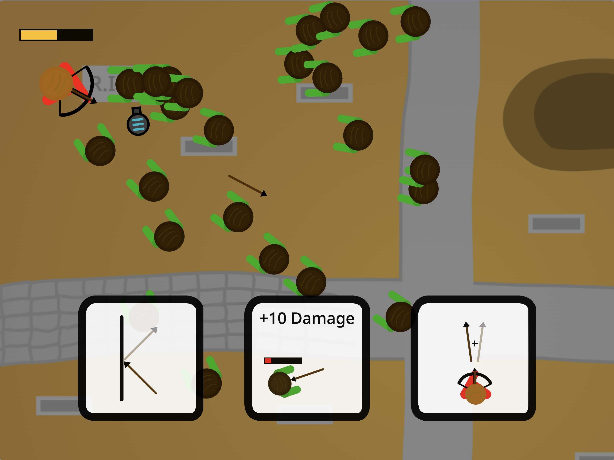

Hello! Welcome to my website. My name is Thomas Holladay, and I am a 17 year old Freshman in my first semester at SVU. I love to do a code, act, make and play music, build things, learn things and languages, and many random other things I get interested in from time to time.
When not at SVU, I live in Ararat, VA, right near by the North Carolina border. I have 9 siblings who I love, 4 older in college at BYU, and 5 younger at home.
This website was built as my final project for my Authoring for the Web class, but I've also taken it as a fun project for myself and a showcase of my interests and skills. I hope you enjoy!
Programming:
I have always loved computers in general. But since 8th grade, I've loved to code, whether it be something like scratch, making video games in godot, or making websites like these.
As previously mentioned, I started scratch in 8th grade, and I quickly became familiar with the software. I made more and more, and later on it seemed like I should switch to a full game engine. But even through highschool, there was always something that brought me back to scratch, whether it was because it was something I was familiar with and didn't need to learn more of, or because I thought I should get a better computer to run more advanced software first. Either way, I kept having small ideas and kept running back to scratch.
However, I did also learn other things. I took Harvards cs50 course online in high school, learned basic python, and followed a couple tutorials for godot. Now that I am in college I am pursuing a computer science major which has allowed me to learn stuff like how to make this website, and I will continue to learn more and more as I pursue my degree.
Because I truly love to create things with code, computer science classes are quite enjoyable to me. It makes the classes go much beyond just getting homework done, and instead the classes are simply what help me in my journey to learn and create the things I want to create. So, whenever I have time, I love to build upon wha I've learned in class, create what I want to for fun, and continue to build my knowledge in other areas, such as a python course I sometimes visit on Brilliant.
Here are some of the projects I've created on scratch:
If you want to see more, you can visit them here on my profile.
Here is a game I made for my institute final project (using HTML, CSS, and JavaScript):
You won! Click below to play again.
This is a screenshot from my very first game I ever made on scratch, Dragonfly Clicker
This is the simple thumbnail for a game I made for someone else in a day.
A map creator I never ended up fully making the game for.
A simple game I made in a day or two.

An enemy shooter game I never completed but had many ideas for.
A game I made as a joke for the Josh Hutcherson meme, took a lot of work though.
The home screen of a math racing game I partially made for my little brother.
Territorial Conquer thumbnail, my biggest game.
And finally, a screenshot from my unfinished duolingo remake, Triolingi.
Theatre:
I've loved to act for a long time. It began somewhat when I was young, but really began to become a thing for me when I was in middle school. I had a friend I loved to do plays with at his house and make movies, and in 7th and 8th grade I took theatre classes, but was unable to do school musicals due to covid.
I then moved to Virginia, where I began to do plays at the Andy Griffith Playhouse in Mount Airy. As of April 2025, I have participated in 15 plays there. Here they are as well as my roles:
The Wizard of Oz - Winkie, Ozian
The Best Christmas Pageant Ever - Elmer
Seussical the Musical Jr. - Wickersham Brother
Little Women - Rodrigo
Shrek the Musical Jr. - Pig
Elf the Musical Jr. - Buddy
Cinderella - Waltzer
Frozen Jr. - Oaken
A Christmas Carol - Businessman, Andrew
Grease the Musical (school version) - Roger
Lion King the Musical - Banzai
Into the Woods - Rapunzel's prince
Young Frankenstein (Tech, spotlight)
The Best Christmas Pageant Ever - Firefighter
A Christmas Carol - Businessman, Andrew
Now that I am currently at SVU, I have continued taking Theatre here. As of April 2025 I have been here for one semester, taken Acting 101 and have been in "Oklahoma!" as the role Ali Hakim.
Overall my theatre experience has been great, I love to act and the community that theatre brings, most of my closest friends have come from the theatre and that has honestly been what I've probably loved the most.
An image from my very first play at the Andy Griffith Playhouse (AGP), the Wizard of Oz.
Me in my role as Rodrigo from Little Women.
Me as Buddy the Elf.
Me waltzing with Chloe in Cinderella.
Me as Roger from Grease (school version).
Me as Rapunzel's prince from Into the Woods.
Me as Ali Hakim in Oklahoma (at SVU).
Music:
For all of my life, I have loved to make music in some way. I have always sung, messed around on the piano, or made music using something else.
In 6th grade, I started playing cello and took orchestra at my local middle school, and got pretty good, playing through 8th grade. But even before that, I started writing music using Noteflight.
Since then I have mostly moved to other software, I found Soundtrap in 8th grade and eventually mostly moved to that. It still doesn't have everything I want and I would love to get a more professional software to make music with. A lot of the songs I've written also simply just use piano I've made up and recorded along with lyrics I wrote down, as well as other mediums for arious songs.
For the other side of things, I have loved to play piano and mostly have just played by ear and things I've made up. I also sing in musicals and sometimes church choir or musical numbers.
Other than the songs on the right, I have many partial, unfinished, or unrecorded songs that I've made and love, arrangements (such as Count your Blessings), sheet music, and even have things like helping with songs such as Landlocked which I made the cello part for.
An image of me playing the cello in 8th grade my sister Madalyn took.
This is the background track of a semi-complete song called "Run From the Truth" I wrote multiple versions of, with the piano being the melody.
"Morning Rainbow," a song I wrote one morning for my scratch game, Territorial Conquer.
"Calm conquer from afar," another song I wrote one morning for my scratch game, Territorial Conquer, however this is the extended version which I am still working on getting vocals for.
This is a recording of me playing "Break My Heart Again" by Finneas, an example of my piano playing.
This is a random recording of me playing some improvised music on the piano that I liked.
Building:
Since I was a child, I've loved to build things. When I was 9-12, I built things like miniature chairs for my sisters doll, and even a specially made box involving a puzzle to figure out which screws to unscrew in order to open the box. Though not necessarily building, I loved to carve wands out of sticks, and made almost 20 and got pretty good at it. I loved creating board games out of paper and cardboard, boxes, cardboard layouts for a video game I wanted to make, and more.
In the recent years, I've moved on to bigger things, such as making sandboxes or garden boxes for my mom, and for myself, I have built a pull-up bar, parallel bars, and am currently working on an obstacle course type build for me and my family.
As far as other similar areas go, I've created many card/board games, woodburned pieces of wood, and many sculptures, gifts, and creations with my 3d printing pen.
Pull-up bar and parallel bars I made.
A simple (well used) sandbox I made for my siblings.
A platform for the obstacle course I am currently working on.
Monkey bars my little brothers started building that I helped them with.
One of my wands as well as it's box I made.
Another wand, as well as my "That1Knife" woodburned sign (plus a cute little robot).
Another woodburning example, a woodburned QR code.
A move the cars game I made with a peice of wood and my 3d pen.
More:
These are a lot of other things that I like to do. In general, I like learning, creating, and making things, and most things involving that I enjoy, have worked with, or at least learned about.
I enjoy fixing things in general, such as things around the house which I've done a lot of being the man of the house, or with my car, which I've also done a lot of such as the speakers, AC knob problems, and broken doors.
I like doing animation, which I have not done a ton of but learned a lot about. With this includes editing and digital (or physical) art that I've done quite a bit of, and though I don't have the best resources for any of these things, I'm decent at them. On the left are a few examples of these.
I like doing things in google sheets and with data, I love to figure things out and make things work to interpolate and edit data based on many scenarios.
I know a good amount of Spanish (just finishing Spanish III at SVU) and also have learned a small amount of Finnish on Duolingo which I have enjoyed.
Even beyond this there are many things that I have not mentioned or expounded on. Basically, I love a lot and can do a lot, I like a good challenge and accomplishing what I want to do.
A lyric video I made for Ghost Town by Benson Boone.
Here's a drawing I made of miss minutes for a game in scratch (using scratch).
Here's a cover I made for my song, "Why Can't Time Just Stop?"